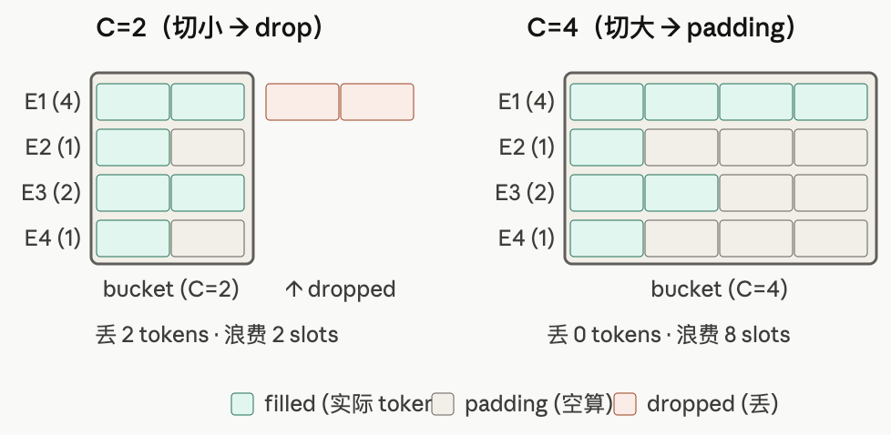
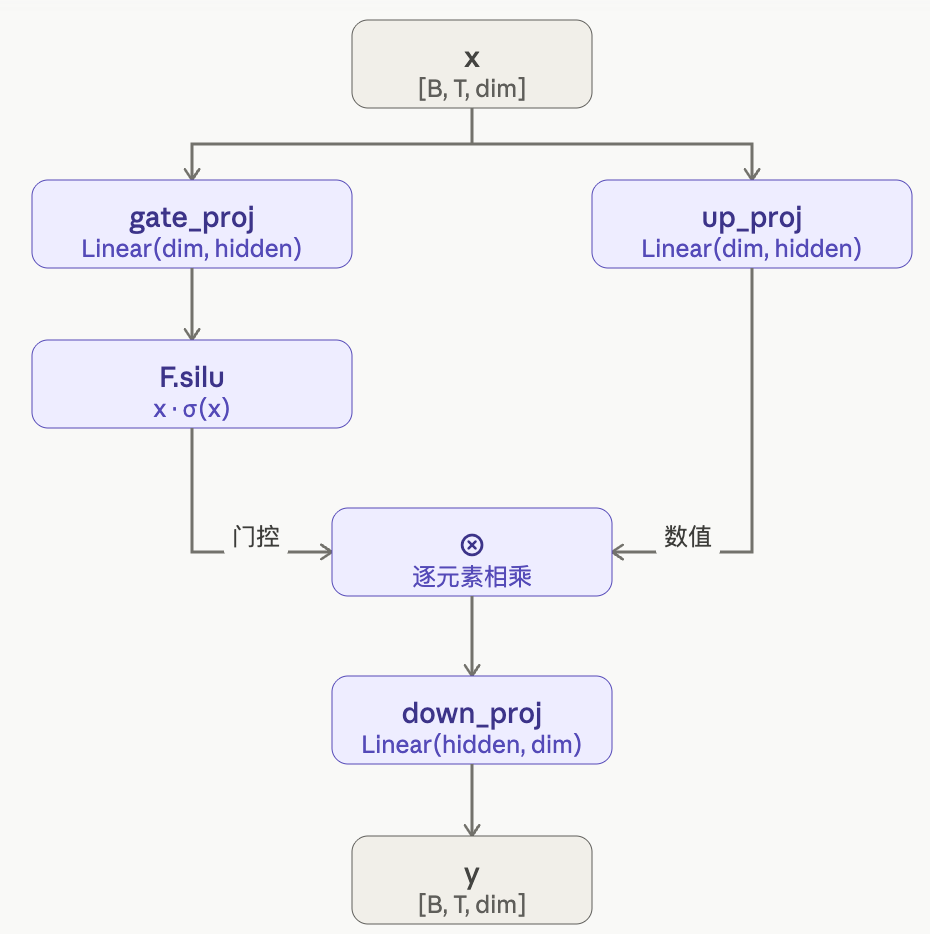
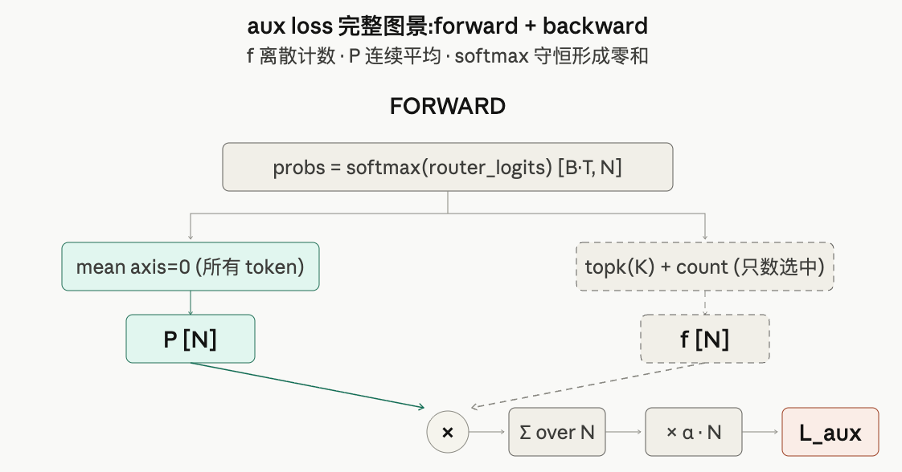
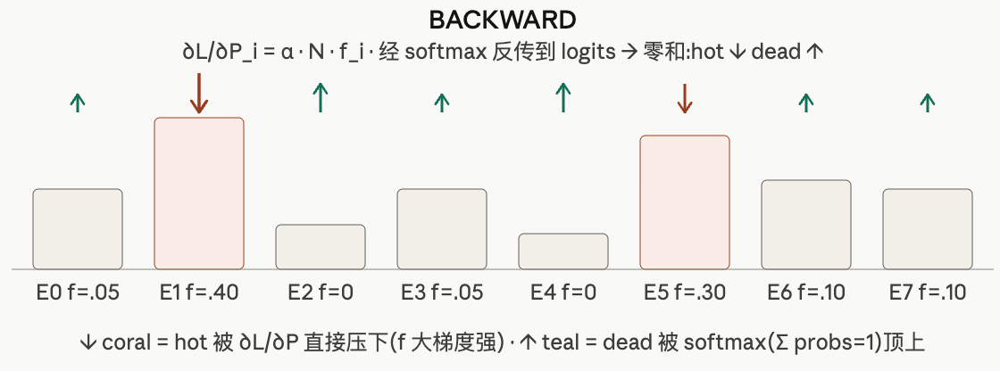
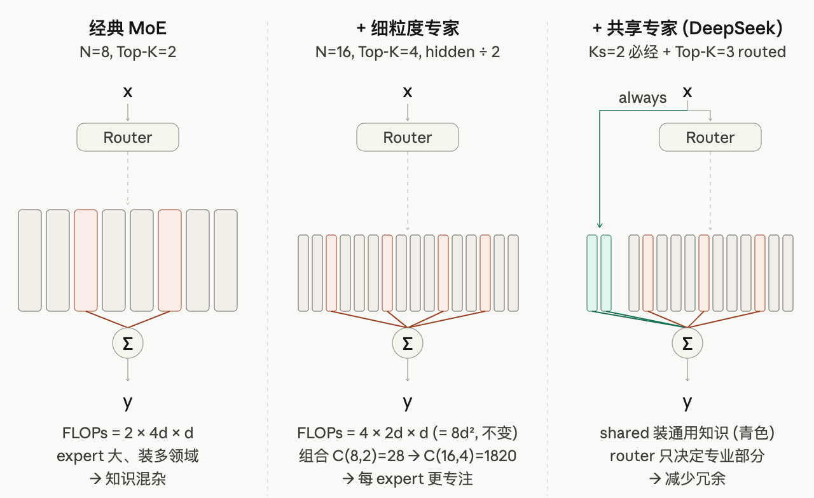
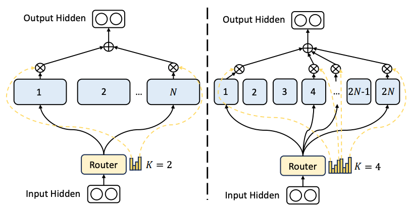
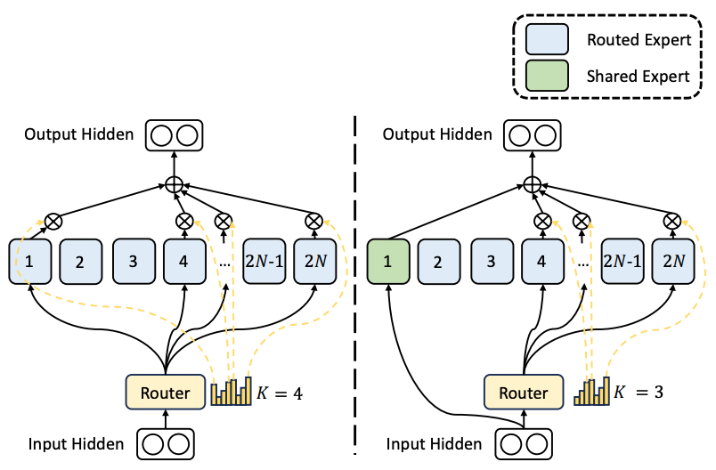
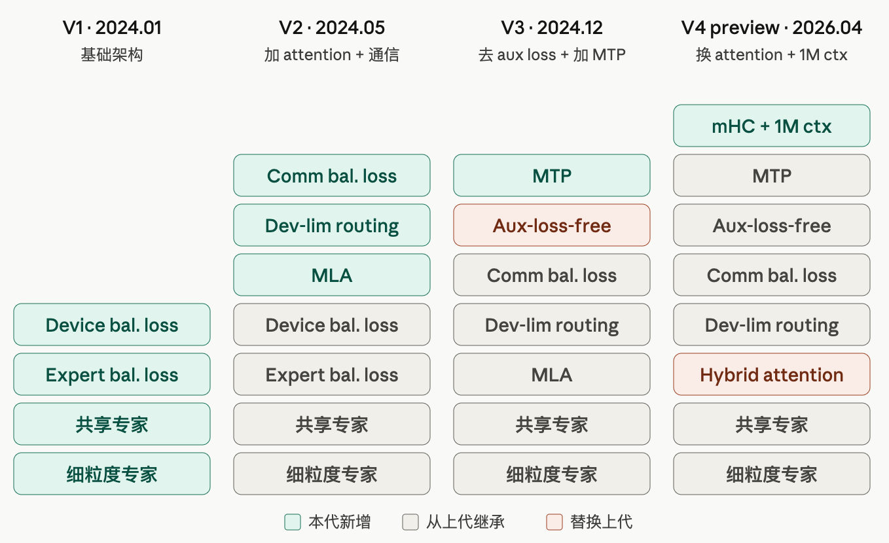

02-MoE 架构详解: 从基础版到 DeepSeek / Qwen3
TL; DR：MoE 基础 → 手写 BasicMoE → Mixtral（真实规模版）→ DeepSeek-MoE（细粒度 + 共享专家 + device-level balance）→ Qwen3-MoE（简约解）
- [Quick Ref for 手写 code]：mini MoE Qwen3 ｜ ipynb ｜ Colab - doc 每节后都有简化版手写代码：BasicMoE / Mixtral / DeepSeek V1 / Qwen3-MoE - 可运行代码取 Qwen3-MoE， MoE部分（手写）+ Qwen3 MHA（调用） 拼成完整一层，与 HF 版对齐验证正确性
- [常考面试点]：嗯反正全是考点，大概率结构、batch process、Parallel部分
本笔记只展开 MoE 模型本身——Expert Parallelism (EP) 的通信细节 和 相关算子 在后续训练系列里单独写
前言
读完 01-Transformer.md 知道 LLaMA Block：每层的主要结构是 Self-Attention → FFN (MLP)。其中FFN 是参数大头，占~70%。
很自然会想：单个 token 真有必要过完整张 FFN 吗？MoE（Mixture of Experts） 的答案是不必——可以把 大FFN 拆成多组小的FFN（expert），每个 token 只走 router 选中的 Top-K 个。
本篇顺序（从概念到 real-world 简化版，同 01-Transformer.md 思路）：
- 1. 什么是 MoE：结构 / 公式 / 1991 起源 / batch process 这个早期工程墙
- 2. 手写 BasicMoE：FFN 改几行；外加 batch process（§2.3）和 aux loss（§2.4）两个绕不开的工程点
- 3. Mixtral：第一个被广泛使用的开源 MoE，算法上就是 BasicMoE 的真实规模版
- 4. DeepSeek-MoE：细粒度 + 共享专家 + device-level balance；V2/V3/V4 继续加
- 5. Qwen3-MoE：只剩 细粒度专家 的简约解，本篇代码最终可运行的 demo 以它为准
1. 什么是 MoE
打开 LLaMA 的 transformer block，其实70%的参数在FFN / MLP，从 GPT-2 到 LLaMA-3 这个比例一直成立。
于是产生自然的问题：实际每条样本应该只需要其中一部分参数就够了，那能不能让"参数容量很大、单次前向只用其中一小部分"？（稀疏性的提出）于是MOE的想法产生了。
这个想法其实 1991 年《Adaptive Mixture of Local Experts》就有了，直觉也很自然：不同 expert 分别专攻不同子领域，由 router 替每个 token 挑出"最对口的几位"，不必像稠密 FFN 那样让一份参数同时承担所有知识。

1.1 基础 idea：FFN 到 Expert
MoE 改的就是 FFN——Attention / Norm / Embedding 完全不动。结构上引入两件东西：
- N 个并列的 SwiGLU FFN：每个叫一个 expert，结构和原Llama FFN 一模一样
- Router / Gate：一个
Linear(d, N)，参数仅 d × N（d = hidden_dim），给每个 token 打 N 个分，看看选哪个好

对每个token（d = 词表hidden_dim），forward 分三步：
Step 1: Routing
logits = gate(x) # linear [d] → [N], 每个 expert 一个分数
topk_logits, topk_idx = topk(logits, K) # 选top K
topk_weights = softmax(topk_logits) # 只在被选中的 K 个里归一化
Step 2: 走 K 个 expert（Top K）
for k in range(K):
out_k = experts[topk_idx[k]](x) # 只激活被选中的 expert
Step 3: 加权求和
y = Σ_k topk_weights[k] · out_k
形式化：
其中 \(G(x)\) 是 N 维权重向量，只有 K 个位置非零（其余被 topk 置 0）——这就是「稀疏激活」。
核心 insight：省 FLOPs（计算），不省显存（存储）。FFN层可以达到：
- N倍参数容量：N 个 FFN
- K倍计算成本：每次计算时只要激活K个FFN
- 但显存不省：所有 expert 都得常驻——Router 是动态的，预先不知道哪些会被选中
1.2 早期 blocker: Batch Process
1991 年就有的想法，为什么这两年才火起来？还记得24年春天的时候，我们MLsys课的大作业还有一个选项：给MoE加batch process，小组几个人兴致勃勃地研究了一晚上选择了换个题目lol（由此可见业界当时还没有很有名的解法
卡点不在算法，在工程：GPU 喜欢大规模矩阵乘，原生MoE设计不适合batch process，所以不能当作单次、大规模的GEMM。
dense FFN 时一个 batch 的 token（eg: batch_size = 8） 一起喂给同一个 FFN，这是一次干净 GEMM。而MoE 把这件事拆掉了——同 batch 的 token 可能去往不同 expert：
batch 里 8 个 token 的路由结果:
token_0, 2, 4, 7 ─► Expert A ──► Expert A 收到 4 个 token
token_5 ─► Expert B ──► Expert B 收到 1 个
token_1, 6 ─► Expert C ──► Expert C 收到 2 个
token_3 ─► Expert F ──► Expert F 收到 1 个
其他 expert 收到 0 个
↑ 非常不均匀, 且每次 batch 都不一样
只能按 per-token loop 实现，每次都是 batch=1 的 GEMM，GPU 利用率 ~5%。所以后来怎么解决的呢？
[解法A：静态capacity-based dispatch] - JAX 还在用
Shazeer 2017 给出"半解"——Dispatch / Combine + Capacity：把 token 按 expert 重排，并强行把每个 expert 收到的token数量切成统一的长度 C，这样所有的 expert 就是一次规整 GEMM。但C切到多少都不完美：
- C 切小了（实际超了）：多出的 token 丢掉 → drop，训练信号丢失
- C 切大了（实际不够）：用 0 补满 → padding，浪费计算

capacity_factor 就是调这个 C 的旋钮，只能在 drop / padding 之间二选一——所以叫"半解"。
看起来确实不够好，所以pytorch已经不用它了；但 JAX/XLA 由于是静态图不吃动态 shape，所以今天 TPU + JAX/XLA 大规模训练中还残留这这个解法。
[解法B：动态dispatch（PyTorch通解），上面再叠 block-sparse GEMM 优化]
- 这个解法其实想法和上面一样，也是dispatch到 per-expert。但Pytorch是动态图，不需要预先定义可接受的token长度C。
- 但其实加速的并不是Pytorch层的算法，看code仍然是N个变长 GEMM。真正提速靠的是kernel层的发明：将多个变长GEMM融合成单个 kernel的 Block Sparse GEMM（吃动态shape！）
……具体怎么算反正很复杂，稀疏性矩阵乘，建议到kernel篇再详细说。但反正记住当代MoE + N卡都用这套逻辑就可以了。
But 学术解 ≠ 工程可用，主流框架把解 B 消化成 import 即用又花了 1~2 年，所以这才出现了24年初我们还不知道怎么处理batch process的情况orz
1.3 一条时间线：成功案例
把上面这条路线压成一张表：
| 时间 | 工作 | 一句话核心贡献 | 参数规模 |
|---|---|---|---|
| 1991 | Jacobs et al. | MoE 雏形 | 玩具规模 |
| 2017 | Shazeer et al. | Dispatch/Combine ——半解静态 batch process | 137B (LSTM) |
| 2021 | Switch Transformer | Switch aux loss——MoE 标准化 | 1.6T |
| 2022 | Megablocks | Block-sparse GEMM—— Pytorch batch process 通解！ | 工程突破 |
| 2023.12 | Mixtral 8×7B | 第一个被广泛使用的开源 MoE | 47B / 13B 激活 |
| 2024.01 | DeepSeek-MoE V1 | 细粒度专家 + 共享专家 | 16B / 2.8B 激活 |
| 2024.03 | Qwen1.5-MoE-A2.7B | Qwen 系列第一个 MoE（近 DeepSeek 路线） | 14B / 2.7B 激活 |
| 2025 | Qwen3-MoE | 反而简化了？最简约的"教科书"解法 | 多档 |
后面三章各挑一个代表展开：§3 Mixtral（最简版）→ §4 DeepSeek-MoE（细粒度 + 共享专家路线）→ §5 Qwen3-MoE。其中 Qwen3-MoE 是这条线上最"教科书"的简约解法，所以最终的可运行代码 demo 以它为准。
2. 手写一个最基本的 MoE
目的：看看「FFN → MoE」到底改了哪几行；以及两个工程问题（batch process + 负载均衡 aux loss）。
2.1 改动 LLaMA FFN
前面说了MoE是通过修改普通FFN得到的，那不妨先回忆一下传统的Llama Decoder Block里的FFN结构。
回顾 01-Transformer.md §4.2：FFN 采用 “升维-降维 结构”（hidden_dim 通常设为 4 * embedding_dim）；LLaMA 版用 SwiGLU 替代了 ReLU ()，SwiGLU 可以调用 SiLU 函数实现：

class BasicExpert(nn.Module): # 或者叫 MLP / FFN / SwiGLU 也行
def __init__(self, dim, hidden_dim=None):
super().__init__()
hidden_dim = hidden_dim or 4 * dim
self.gate_proj = nn.Linear(dim, hidden_dim, bias=False) # 升维 1
self.up_proj = nn.Linear(dim, hidden_dim, bias=False) # 升维 2
self.down_proj = nn.Linear(hidden_dim, dim, bias=False) # 降维
def forward(self, x):
return self.down_proj(F.silu(self.gate_proj(x)) * self.up_proj(x))
把这块 FFN 换成 MoE，只需要 3 处 diff：
- N 个 SwiGLU 当 expert：每个 expert 就是上面这份 SwiGLU，N 份并列
- 一个 Router：小的 Linear，把每个 token 从hidden_dim 映射到 N 个 expert 的"得分"
- forward ：过 router → 过 TopK 个 expert + 加权求和
2.2 实现 MoE
按 §2.1 的 3 处 diff 拼一起。先把 Router 抽成独立 class——每个 token 先经过 router 拿到 top-k 的 expert 索引和权重：
- 通过gate得到N expert初始分数 -> Softmax -> 选top K -> renorm
class Router(nn.Module):
"""softmax → topk → renorm: 决定每个 token 走哪 K 个 expert"""
def __init__(self, dim, num_experts, top_k):
super().__init__()
self.gate = nn.Linear(dim, num_experts, bias=False) # 参数仅 d × N
self.top_k = top_k
def forward(self, x): # x: [B*T, d]
logits = self.gate(x) # d -> N, [B*T, N]
probs = F.softmax(logits, dim=-1, dtype=torch.float) # 在全部 N 个 expert 上 softmax
topk_weights, topk_idx = torch.topk(probs, self.top_k, dim=-1) # [B*T, K]，获得top K
topk_weights = topk_weights / topk_weights.sum(dim=-1, keepdim=True) # 在 K 个之间重新归一化
return logits, topk_weights.to(x.dtype), topk_idx # logits 留给 aux loss
再拼成 BasicMoE：默认走 per-expert dispatch（per-token 双层 for 注释保留作参考）：
class BasicMoE(nn.Module):
def __init__(self, dim, num_experts=8, top_k=2):
super().__init__()
self.num_experts = num_experts
self.top_k = top_k
# 直接用前面写的 router class
self.router = Router(dim, num_experts, top_k)
# 直接用前面写的 BasicExpert class
self.experts = nn.ModuleList([BasicExpert(dim) for _ in range(num_experts)])
def forward(self, x): # x: [B, T, d]
B, T, d = x.shape # batch_size, seq_len, hidden_dim
x = x.view(-1, d) # [B*T, d], 每个 token 处理逻辑相同, flatten
# ---------- Routing ----------
logits, topk_weights, topk_idx = self.router(x) # 选top K; logits 一并留着
# ---------- 写法一：per-token 双层 for（原始 naive 写法，实际不用，留作参考）----------
# out = torch.zeros_like(x)
# for t in range(B * T):
# for k in range(self.top_k):
# e = topk_idx[t, k].item()
# out[t] += topk_weights[t, k] * self.experts[e](x[t].unsqueeze(0)).squeeze(0)
# ---------- 写法二：per-expert dispatch（当代 PyTorch 实际解法，§2.3）----------
out = torch.zeros_like(x)
for e in range(self.num_experts):
sel = (topk_idx == e) # [B*T, K] bool: 哪些 token 在 top-k 里选了 e
if not sel.any(): continue
tok, kth = sel.nonzero(as_tuple=True) # tok: token 行号; kth: 它在第几个 slot
# x[tok]: [n_e, d] → expert e 一次 dense GEMM；按各自权重 scatter-add 回去
out[tok] += topk_weights[tok, kth, None] * self.experts[e](x[tok])
return out.view(B, T, d), logits # 返回 router_logits §2.4 算 aux loss 才用
这个 BasicMoE（router + per-expert dispatch）就是后面所有真实模型的公共最小核——后面每个 = BasicMoE + 一点增量：
- vs Mixtral（§3）：MoE block 层面没有算法区别——Mixtral 就是 BasicMoE 的真实规模版
- vs DeepSeek-MoE（§4）：再加 细粒度专家 + 共享专家 + device-level balance loss
- vs Qwen3-MoE（§5）：MoE 层只加 细粒度专家 +
norm_topk_prob开关（间隔层 / q,k norm 在 decoder/attention 层，不在这个 block）
两点说明：
- dispatch 写法：per-token 双层 for 是原始版，per-expert 是实际用的版。但它真正的性能收益其实落在算子层面的加速→ §2.3
- 前向 code 看不出 loss 计算的特点，还需要 aux loss → §2.4
2.3 进阶：batch process
概念在 §1.2 讲过（解 A capacity / 解 B 动态 dispatch）；这里只看解 B 在 PyTorch 代码层怎么落地。
§2.2 注释掉的 per-token 双层 for 是退化版（每次 batch=1，GPU ~5%）；BasicMoE 默认跑的是下面这段 per-expert dispatch——把路由到同一 expert 的 token 聚到一起再算：
for e in range(num_experts):
idx = tokens routed to expert e # [n_e] 变长
if idx.numel() == 0: continue
out[idx] += weights[idx] * experts[e](x[idx]) # [n_e, d] 实际会变成一次 dense GEMM
per-expert 相对 per-token 其实pytorch层并没有造成收益，看起来N 个变长 GEMM 在 PyTorch 里仍是 N 次独立 kernel launch。真正提速靠融合 kernel——block-sparse / grouped GEMM（Megablocks），让它只要一次kernel launch。
2.4 进阶：Aux Loss - Expert Balance
前向code看不出Loss计算的特点，所以单独开一小节。
均衡有两种粒度，device均衡到后面说。如果不想了解数学部分，可以浅看一下定义然后跳过这一小节：
| 粒度 | 痛点 | 解法 |
|---|---|---|
| Expert 粒度 | dead expert——少数通吃，其他饿死 | Switch Transformer（2021) aux loss |
| Device 粒度 | EP 时 GPU 0 干完在等 GPU 1，不高效 | DeepSeek 2024 device-level loss（§4.5） |
本节只讲 expert 粒度当前的标准解法 Switch aux loss，来看一下它的定义：
- \(f_i\)（离散）：本 batch 中选中 expert \(i\) 的 token 比例
- \(P_i\)（连续）：全部 token 在 expert \(i\) 的 softmax 概率均值——是 top-k 之前算的，没选 \(i\) 的 token 也贡献 \(P_i\)
- 逐 expert 累加 \(f_i \cdot P_i\)；\(f_i = 0\) 的位置整项就是 0。完全均匀时 \(f_i = P_i = 1/N\)，\(L_{aux} = \alpha\)（根据均值不等式它是下界）

反向梯度路径
forward: logits ─► softmax ─► P_i (可导)
└► topk + count ─► f_i (离散, 不可导, 当常量)
∂L / ∂P_i = α · N · f_i (正值, 且正比于 f_i)
回忆梯度下降 \(\theta \leftarrow \theta - \mathrm{lr} \cdot \partial L / \partial \theta\)，正梯度 = 优化器会把这个量往下推。所以 \(f_i\) 越高 → \(P_i\) 被压得越狠 → 再通过 softmax 反传，对应 expert 的 logits 被拉低——这就是"惩罚"。
Dead expert 怎么被救? 上面说 \(\partial L / \partial P_i = \alpha N f_i\)——\(P_i\) 的梯度正比于 \(f_i\)。dead expert 的 \(f_i = 0\)，\(P_i\) 之间通过 softmax 耦合——加起来恒为 1，不能独立动。
具体把 softmax 的 Jacobian 展开（\(p_{t,i}\) 表示 token \(t\) 在 expert \(i\) 的 softmax 概率）：
- \(f_k\) 高于加权平均 \(\langle f, p_t\rangle\)：正梯度 → logits 拉低（惩罚）
- \(f_k\) 低于加权平均：负梯度 → logits 推高（奖励）

Dead expert 的 \(f_k = 0\) 是所有 expert 里最低的，一定低于加权平均 → logits 被推高 → 下次更可能被选中。零和博弈，"不被惩罚"通过 softmax 这条耦合直接换成了"奖励"。
实现也就几行——用 forward 返回的 router_logits：
def switch_aux_loss(router_logits, top_k, num_experts, alpha=0.01):
# router_logits: [B*T, N] (softmax 之前)
probs = F.softmax(router_logits, dim=-1, dtype=torch.float) # [B*T, N]
P = probs.mean(0) # [N], 平均概率
topk_idx = probs.topk(top_k, dim=-1).indices # 由 logits 复原 top-k 选择
f = F.one_hot(topk_idx, num_experts).float().sum(1).mean(0) # [N], 实际选中比例 (离散)
return alpha * num_experts * (f.detach() * P).sum() # f.detach(): 不参与梯度
# 训练 step:
y, logits = moe(x) # forward 已返回 router_logits (§2.2 起就这样)
loss = task_loss(y, target) + switch_aux_loss(logits, moe.top_k, N)
Loss侧的历史归属：负载均衡 + aux loss 概念是 Shazeer 2017提出；DeepSeek-MoE V1 沿用，加了 device-level（§4.5）；V2/V3 又加了额外的loss设计用于约束通信量。
3. Mixtral 8×7B 简化版
Mixtral（Mistral AI, 2023.12）是第一个被广泛使用的开源 MoE。把 MoE 这个概念从论文带进了开发者的日常。
3.1 配置
FFN (MoE层):
num_experts: 8
top_k: 2
expert hidden_dim: 14336 (单 expert ≈ 7B 等价 FFN)
router: Linear(4096, 8)
总参数: ~46.7B
激活参数: ~12.9B / token (2/8 个 expert + 全部 attention)
context: 32K
为什么叫 "8×7B" 但不是 8×7=56B？attention 和 embedding 在 8 个 expert 间是共享的，只有 FFN 是 8 份，加起来 ~47B。显存按 47B 算，FLOPs 按 ~13B 算（top 2）——是 MoE "参数容量大、推理便宜"的典型画像。
3.2 简化版代码
和 §2.2 BasicMoE 算法上几乎一样。但我们的 BasicMoE 并不是照着 Mixtral 抄的——只是把经典设计加到一个基础 MoE 上，它就和 Mixtral 长一样了🤔。
代码里只有 dispatch 的写法不同（换成更标准的 expert_mask + index_add_），简单看看就得了，下面和 §2.2 不一样的行都用 # ≠§2.2 标出来：
class MixtralExpert(SwiGLU):
"""Mixtral 的 expert 就是一个标准 SwiGLU"""
pass
class MixtralSparseMoeBlock(nn.Module):
def __init__(self, dim=4096, num_experts=8, top_k=2, hidden_dim=14336):
super().__init__()
self.num_experts = num_experts
self.top_k = top_k
self.gate = nn.Linear(dim, num_experts, bias=False)
self.experts = nn.ModuleList(
[MixtralExpert(dim, hidden_dim) for _ in range(num_experts)]
)
def forward(self, x): # [B, T, d]
B, T, d = x.shape
x = x.view(-1, d) # [B*T, d]
# Routing: softmax → topk → renorm (和 §2.2 BasicMoE 完全一样)
router_logits = self.gate(x) # [B*T, N]
routing = F.softmax(router_logits, dim=-1, dtype=torch.float)
topk_weights, topk_idx = torch.topk(routing, self.top_k, dim=-1)
topk_weights = (topk_weights / topk_weights.sum(-1, keepdim=True)).to(x.dtype)
# !!! 更标准一点的 Per-expert dispatch
out = torch.zeros_like(x)
# ≠§2.2: 预先一次性算 one-hot mask [N, B*T, K]，替代 §2.2 里每个 e 现算 (topk_idx == e)
expert_mask = F.one_hot(topk_idx, num_classes=self.num_experts).permute(2, 0, 1)
for e in range(self.num_experts):
# ≠§2.2: where(expert_mask[e]) 等价于 §2.2 的 (topk_idx == e).nonzero()
token_idx, kth = torch.where(expert_mask[e])
if token_idx.numel() == 0:
continue
output = self.experts[e](x[token_idx]) * topk_weights[token_idx, kth, None]
# ≠§2.2: index_add_ 替代 §2.2 的 out[tok]+=；索引可重复时也对、autograd 安全
out.index_add_(0, token_idx, output)
return out.view(B, T, d), router_logits # router_logits 留给 aux loss
只是更接近真实源码。换句话说 Mixtral 就是 BasicMoE 跑在真实配置上（8 个 7B expert、top-2）。（Mixtral attention 用 GQA，但那是 attention 层、不在这个 MoE block——和本文别处一样不在此展开。）
4. DeepSeek-MoE 简化版
DeepSeek 2024.01 发表 DeepSeekMoE，配套发布 16B / 145B 两个规模的模型。它定义了之后 MoE 的"中国学派"路线——Qwen2-MoE、Kimi-K2、DeepSeek-V2/V3 都沿用过（Qwen3-MoE 是反例，详见 §5）。
4.1 经典 MoE 的两个问题
DeepSeek-MoE 论文先指出 Mixtral 这种"少量大 expert + Top-K"的设计有两个问题：
- Knowledge Hybridity（知识混杂）：N 太小 → 单个 expert 必须装"数学 + 代码 + 自然语言 + ..."，没法真正专业化
- Knowledge Redundancy（知识冗余）：通用知识（语法、常识）每个 expert 都要重复存储一份
DeepSeek 的两个改动一一对应。

4.2 细粒度专家
细粒度专家，原文叫 Fine-Grained Expert Segmentation：把每个 expert 切成 m 份小 expert，同时把 Top-K 也乘 m，保持总激活参数 不变。

举个例子，原来 N=8、K=2、每个 expert 的 FFN 中间层 hidden=4d，做 m=8 倍切分：
Before: N=8, K=2, hidden = 4d (FFN: d → 4d → d)
After: N=64, K=16, hidden = 4d / 8 = 0.5d (FFN: d → 0.5d → d)
注意：细粒度切分后，每个小 expert 的 FFN 中间层从 4d 缩到 0.5d——结构一样，但中间层比 hidden_dim 还窄，靠expert的数量把表达能力拉回来。
每个 expert 自己的激活 FLOPs（per token）正比于 d × hidden：
代价不涨，但组合空间从 \(C(8,2)=28\) 涨到 \(C(64,16)\approx 5\times 10^{14}\)——指数级增长。每个 expert 容量小了，但只需要装一个细分领域。
代码上就是改三个超参：hidden_dim ↓ m、num_experts ↑ m、top_k ↑ m。
4.3 共享专家
共享专家 治通用知识冗余，原文叫 Shared Expert Isolation：从 expert 池里"切出" \(K_s\) 个作为 Shared Expert（所有 token 必经），剩下作为 Routed Expert（按 router 选 Top-K）：

直觉是：通用知识（语法、常识等）让 shared expert 承担，routed expert 只装真正需要"按需路由"的专业知识。这样 router 的决策压力变小——只决定专业部分，不需要再决定"通用知识在哪个 expert"。 $$ y = \sum_{i=1}^{K_s} E^{(s)}i(x) + \sum_j(x) $$}(\text{router})} g_j \cdot E^{(r)
4.4 简化版代码
在 §2 BasicMoE / §3 Mixtral 的 per-expert dispatch 上加两件事—— 细粒度expert + 并联一组 shared expert：
class DeepSeekMoE(nn.Module):
"""Routed Experts (Top-K, 细粒度) + Shared Experts (always on)"""
def __init__(self, hidden_size,
num_routed_experts=64, num_shared_experts=2,
top_k=6, moe_intermediate_size=None):
super().__init__()
self.num_routed = num_routed_experts
self.top_k = top_k
self.gate = nn.Linear(hidden_size, num_routed_experts, bias=False)
self.routed_experts = nn.ModuleList([
SwiGLU(hidden_size, moe_intermediate_size) for _ in range(num_routed_experts)
])
self.shared_experts = nn.ModuleList([
SwiGLU(hidden_size, moe_intermediate_size) for _ in range(num_shared_experts)
])
def forward(self, x): # [B, T, d]
B, T, d = x.shape
x = x.view(-1, d)
# Shared experts: 所有 token 必经, 不进 router、不进 aux loss
shared_out = sum(expert(x) for expert in self.shared_experts)
# Routed experts: softmax → topk → renorm → per-expert dispatch
router_logits = self.gate(x)
routing_weights = F.softmax(router_logits, dim=-1, dtype=torch.float)
routing_weights, selected = torch.topk(routing_weights, self.top_k, dim=-1)
routing_weights = routing_weights / routing_weights.sum(dim=-1, keepdim=True)
routing_weights = routing_weights.to(x.dtype)
routed_out = torch.zeros_like(x)
expert_mask = F.one_hot(selected, num_classes=self.num_routed).permute(2, 1, 0)
for e in range(self.num_routed):
kth, top_x = torch.where(expert_mask[e])
if top_x.numel() == 0: continue
output = self.routed_experts[e](x[top_x]) * routing_weights[top_x, kth, None]
routed_out.index_add_(0, top_x, output)
return (shared_out + routed_out).view(B, T, d), router_logits
简单来说，跟基础版比，改动两处：
- 多了
shared_experts——永远参与，不进 router、不进 aux loss - forward 末尾把 shared 输出和 routed 输出相加
4.5 Loss新增 - Device balance
DeepSeek-MoE V1 在 Loss 上相对前面的改动：继承 Switch aux loss，再加一项 device-level balance。
| 粒度 | 问题 | 解法 |
|---|---|---|
| Expert 粒度 | dead expert，少数通吃，其他饿死 | 继承 Switch aux loss |
| Device 粒度 | EP 时 GPU 0 干完在等 GPU 1 | DeepSeek V1 新增 device-level balance |
继承的 Expert-Level Balance：就是前面的Switch aux loss，唯一区别是只对 routed expert 算（shared expert 必经，不参与均衡）： $$ L_{ExpBal} = \alpha_1 \cdot \sum_{i=1}^{N_r} f_i \cdot P_i $$
新增的 Device-Level Balance：只到 expert 级别还不够，用 EP（把 \(N_r\) 个 routed expert 摊到 D 张 GPU 上）时会出现：
- Device 0（4 个 expert）：token 路由后总和 eg. 390
- Device 1（4 个 expert）：token 路由后总和 eg. 320
- → GPU 0 干完在等 GPU 1
于是再加一项，约束 device 负载也接近：
其中 \(f'_d, P'_d\) 是该 device 上所有 expert 的负载 / 概率之和——公式还是 \(f \cdot P\)，只是粒度从 expert 换成 device。它和 \(L_{ExpBal}\) 一样直接加进总 loss：
（V2 又加了第三项通信均衡 \(L_{CommBal}\)，见 §4.7）
两个容易混淆的点：
- DevBal 只管计算量，不管通信。它平衡的是每张卡的 token 总数（决定谁先算完），不碰 All-to-All 的发送/接收流量——那是 V2 干的
- DevBal 不会 shuffle expert→device 的分配。expert 落在哪张卡是静态划分、固定不动的；DevBal 纯粹靠 loss → router 梯度，推 router 把 token 路由得让每卡总和接近，而不是搬运 expert
4.6 参数量 / 稀疏性
以 DeepSeek-MoE 16B 为例：容量按 16B 收，推理 FLOPs 按 2.8B 付（推理参数其实可以手算出来）。
Routed Expert: N_r = 64, hidden = 1408, Top-6
Shared Expert: N_s = 2, hidden = 1408, 全部参与
每 token 激活: 6 + 2 = 8 个 expert
总参数: ~16B 激活参数: ~2.8B 质量: 接近 LLaMA2-7B
手算激活参数：借用 LLaMA 稠密版经验比例（FFN ≈ 2/3，MHA ≈ 1/3），把激活参数设为 x：
- MHA = \(x/3\)
- FFN = \(2x/3\)，由 8 个 active expert 摊，每个 = \(x/12\)
- 总参数 = MHA + 全部 66 个 expert × per-expert = \(\frac{x}{3} + 66 \cdot \frac{x}{12} = \frac{35x}{6}\)
代入总参数 16B，和官方报的 2.8B 对得上：
4.7 后续演进：V2 / V3 / V4
V1 之后这条路线还在继续加东西，这里只列改了什么，细节留到对应专题（等我慢慢学orz）：

每条按 〔针对什么〕→ 改了什么 → 目的 来读（jusf for ref，不想看就跳过）：
DeepSeek-V2（2024.05）——主攻"推理省显存 + 限制通信量"
- MLA〔针对 KV cache〕：把 KV cache 联合压成一个低秩隐向量、用时再还原，KV cache 显存大降。本质是 attention 优化
- Device-Limited Routing〔针对通信·发送端〕——硬路由约束，不是 loss：forward 里直接限制每个 token 只能从 Top-M 个 device（M=3）里选 expert。免得 All-to-All 爆炸
- Comm Balance Loss〔针对通信·接收端〕——loss新增项：Device-Limited 只硬性管住了发送上界、没管接收；这项加进总 loss，靠梯度鼓励 router 让每张卡收到的 token 数也均衡，避免某张卡网卡被打爆
区分：Device-Limited Routing 是"不许"（改 forward、硬编码），balance loss 是"建议"（改 loss）
DeepSeek-V3（2024.12）——主攻"均衡的副作用 + 训练/推理吞吐"
- Auxiliary-Loss-Free Balancing〔针对负载均衡本身〕：aux loss 会给 router 注入"非任务方向"的梯度（系数 α 难调）。V3 直接去掉 aux loss，改成给每个 expert 一个动态 bias \(b_i\)（只影响路由选择、不参与 backward），按实时负载增减；于是router 梯度纯由 task loss 驱动，更稳
- MTP（Multi-Token Prediction）〔针对训练/推理效率〕：训练时一步预测后面多个 token（不只 next-1），训练信号更密；推理时这些预测头可拿来做投机解码加速
DeepSeek-V4（2026.4）——重心已移到 attention + long context，MoE 基本沿用 V3
- Hybrid Attention〔针对 long-context attention〕：CSA + HCA + DSA 三件套替换 MLA，1M context 下 V4-Pro 只要 V3.2 的 27% FLOPs / 10% KV cache
- mHC（Manifold-Constrained Hyper-Connections）〔针对深层信号稳定〕：在残差连接上加流形约束，缓解 1M token 超长训练时跨层信号衰减/爆炸
- 1M context：成为所有 DeepSeek 官方服务的默认上限
5. Qwen-MoE 简化版
Mixtral 和 DeepSeek-MoE V1 的设计已经清楚。Qwen 的几代 MoE 正好可以放在这两个已知参照上看：
| 模型 | 专家配置（routed + shared / top-k） | shared expert | 初始化 | 路由 + 均衡 |
|---|---|---|---|---|
| Mixtral 8×7B | 粗：8 + 0 / top-2 | 无 | from scratch | softmax→topk，Switch aux |
| DeepSeek-MoE V1 | 细：64 + 2 / top-6 | 有，恒加（无门控） | from scratch | softmax→topk，Expert+Device balance |
| Qwen1.5-MoE-A2.7B | 细：60 + 4 / top-4 | 有 | upcycling 自 Qwen-1.8B | Switch aux |
| Qwen2-MoE (57B-A14B) | 细：64 + 8 / top-8 | 有，带 sigmoid 门控 | — | Switch aux |
| Qwen3-MoE | 细：128 + 0 / top-8 | 无（移除） | — | softmax→topk，Switch aux |
逐代看：
- Qwen1.5-MoE：基本照搬 DeepSeek V1；唯一实质区别是初始化用 upcycling（拿训好的稠密 Qwen-1.8B 的 FFN 复制成 expert 再继续训），DeepSeek-MoE 是 from scratch
- Qwen2-MoE：相比上一代规模放大；shared expert 上加了一个 sigmoid 门控，DeepSeek 是无条件恒加，这里让 shared 的贡献也可调
- Qwen3-MoE：走了简化路线，只保留细粒度 + 动态 dispatch + Switch aux loss；Attention 侧倒是加 \(q_{norm}\) / \(k_{norm}\)（同 LLaMA-4），RoPE 动态频率。
shared expert 留不留并不是 Qwen 的固定立场（后续多模态 Qwen-3.5 又把它加了回来）——VLM 不在本篇范围，留到 VLM 篇。
后面以 Qwen3-MoE 为例：它是 sparse MoE 较干净的参考实现。
5.1 Qwen3-MoE 改了什么
以 §4 DeepSeek-MoE V1 为对照，Qwen3-MoE 的设计分三类：
[沿用 DeepSeek的]：细粒度专家，Switch aux loss
[和 DeepSeek 反着来的]：移除 shared expert，均衡只停在 Switch aux loss（木有Deepseek一系列限制通信量的loss）
[Qwen 自己的]
- 间隔层启用 MoE：
decoder_sparse_step控制每隔几层才换成 MoE，其余层保持稠密 SwiGLU——增加容量但不让总参数失控（DeepSeek 是除首层外基本层层 MoE） - Attention 加 \(q_{norm}\) / \(k_{norm}\)：和 MoE 正交，训练稳定性，与 LLaMA-4 一致
5.2 简化版代码
精简版——核心 dispatch 逻辑 和 Qwen3-MoE 源码 一致
class Qwen3MoeSparseMoeBlock(nn.Module):
def __init__(self, hidden_size, num_experts=128, top_k=8,
moe_intermediate_size=None, norm_topk_prob=True):
super().__init__()
# [结构] gate + N 个 expert —— 和 Mixtral / DeepSeek 的 routed 部分完全一样
self.num_experts = num_experts
self.top_k = top_k
self.norm_topk_prob = norm_topk_prob # ← Qwen 特有：是否对 top-k 概率再归一化（bool开关）
self.gate = nn.Linear(hidden_size, num_experts, bias=False)
self.experts = nn.ModuleList( # 无 shared expert（DeepSeek 有；Qwen3 这代砍了）
[SwiGLU(hidden_size, moe_intermediate_size) for _ in range(num_experts)]
)
def forward(self, hidden_states):
B, T, d = hidden_states.shape
x = hidden_states.view(-1, d) # 摊平成 [B*T, d]，逐 token
# ===== 阶段 1 Routing =====
router_logits = self.gate(x) # [B*T, N] 打分
routing_weights = F.softmax(router_logits, dim=-1, dtype=torch.float) # 先在全部 N 上 softmax
routing_weights, selected = torch.topk(routing_weights, self.top_k, dim=-1) # 再取 top-k
if self.norm_topk_prob: # ← Qwen 特有开关：DeepSeek 恒做归一化
routing_weights = routing_weights / routing_weights.sum(-1, keepdim=True)
routing_weights = routing_weights.to(x.dtype)
# ===== 阶段 2 Per-expert dispatch =====（和大家都一样）
out = torch.zeros_like(x)
expert_mask = F.one_hot(selected, num_classes=self.num_experts).permute(2, 1, 0)
for e in range(self.num_experts):
kth, top_x = torch.where(expert_mask[e]) # 选了 expert e 的 token 及其在第几位
if top_x.numel() == 0: continue
output = self.experts[e](x[top_x]) * routing_weights[top_x, kth, None]
out.index_add_(0, top_x, output) # 按原 token 位置散回
# ===== 阶段 3 出口 =====
return out.view(B, T, d), router_logits
# ↑ 返回 (out, router_logits) , logits用来算 aux loss
归纳一下：这个 block 里 Qwen 真正特有的只有 norm_topk_prob 这个开关。Qwen3-MoE 另外两处特色改动不在这段代码里，各自的位置是：
- 间隔层 MoE（
decoder_sparse_step）：在 decoder layer 决定这一层用Qwen3MoeSparseMoeBlock还是稠密 MLP - q_norm / k_norm：在 Attention(MHA) 子模块里（和本 block 平级的另一个分支），不算MoE层的改动，这里先不写
5.3 其他讨论
[工业界为什么用 Qwen-MoE]
可以看出 Qwen 相比 DeepSeek 系列，MoE 几乎没加额外设计，反而是简化。那效果如何、选型时为什么有时不选 DeepSeek 而选它？
-> 是的我们组开源部分用的就是Qwen系列（
结构层面，简化本身反而就是理由：
- 部署规整：无 shared expert，所有 expert 同构（shared expert 在 EP 下是要特殊处理的特例）
- 不绑拓扑：只留 Switch aux loss，没有 DeepSeek 那批和集群强耦合的均衡超参，换并行方式不用重调
- 生态成熟：HF / vLLM / SGLang 对标准 SparseMoeBlock 支持最好，微调、量化、推理适配成本低
- 训练稳：少一组 loss 和超参，不依赖 DualPipe / EPLB 这类系统协同也能训
前沿大规模 from-scratch 用 DeepSeek 路线，中等规模 / 微调 / 套通用框架，Qwen-MoE 更省事。
非结构层面，Qwen 系列还有几点选型优势：
- 档位齐全：Qwen3 从 0.6B 到 235B 全谱系，dense 与 MoE 双线；DeepSeek 主力只有超大 MoE（236B/671B），按显存预算选档时 Qwen 灵活
- 许可宽松：Qwen3 系列 Apache-2.0，商用无负担
- 生态最全：HF 下载量、社区微调、量化（GGUF/AWQ/GPTQ）、推理框架适配覆盖最广，119 语言
- 效果：旗舰 Qwen3-235B-A22B 属开源第一梯队，但纯推理性价比 DeepSeek-V3/R1 同样强——各有所长，Qwen 赢在档位齐全 + 工程易用
6. 总结
一条线串起来：
- 基础 MoE（§2）：FFN → N 个 expert + Router，选 Top-K 加权求和，使用per-expert dispatch（最经典的公共backbone）
- Mixtral（§3）：第一个被广泛使用的开源 MoE。算法上就是 BasicMoE 的真实规模版（8 expert + Top-2）
- DeepSeek 系列（§4）：V1 三个核心改动——细粒度Expert（提容量）+ 共享专家（降冗余）+ device-level balance loss（通信balance约束）；V2/V3/V4 一路加（MoE 本体没大改，工程件越来越多）
- Qwen 系列（§5）：反向演化——只留了细粒度expert 的简约设计。胜在档位齐全（0.6B–235B、dense+MoE）+ 生态易用
贯穿全篇的两个核心问题：
- batch process（怎么让稀疏路由跑在 GPU 上）：Shazeer capacity 是带 drop/padding 的半解，JAX/XLA 由于静态图特性还残留 capacity_factor；PyTorch 的默认解收敛到动态 dispatch，真正提速在算子层的 block-sparse / grouped GEMM（MoE 由此兴起）
- 负载均衡（怎么不让 expert 死掉）：基础解是 aux loss（§2.4）；DeepSeek 在上面叠多种通信限制设计（V1/V2/V3）；Qwen 停在 expert-level 不再加
EP 和相关 block-sparse GEMM 算子，后面再说吧（
7. 代码实现
Qwen3-MoE 已经是最精简的 MoE，，相对 §2.2 BasicMoE 只多：(1) norm_topk_prob 开关，(2)细粒度专家。
代码部分取 Qwen3-MoE 的 block，再配上 Qwen3 的 MHA，拼成完整可跑的一层。和直接调HF版结果对齐，验证了正确性：
- MoE block（§5.2 / §2.2）↔
Qwen3MoeSparseMoeBlock - aux loss（§2.4）↔ HF
load_balancing_loss_func - MHA（§5.1 的 q_norm/k_norm + RoPE + GQA）↔
Qwen3MoeAttention
MHA 部分不是重点，直接调用没展开。单 GPU可跑，不下载数据。